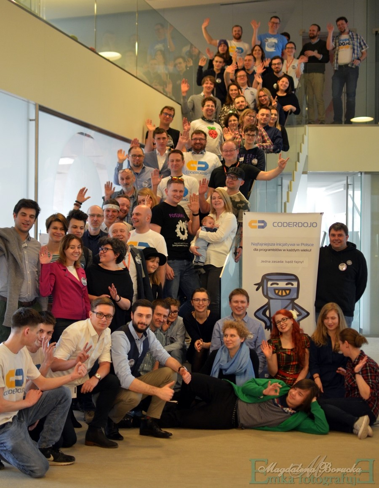

Recently, Kamil Sijko of the Warsaw R User Groupdiscussed with the R Consortium his transition from academia to leading data science in the business sector. He noted the current dormancy of Warsaw’s R community and the eagerness to revive its dynamic, pre-COVID meetups. The group’s latest meeting explored new, interactive formats to engage its diverse membership better.
Please share about your background and involvement with the RUGS group.
During my early academic years at the University of Social Sciences in Warsaw, we explored several interesting projects, one of which was ‘webiR’ in 2009. This project was an attempt to blend R’s capabilities with web application development, which was not very common at the time. We developed webiR a few years before the advent of Shiny in 2012 with the idea of making R more accessible to non-technical users.
While webiR might not be widely remembered today, unlike the widely successful Shiny, it represented our early efforts to simplify data analysis. The application allowed users to choose survey questions they were interested in, and then it would automatically select suitable analyses through a set of heuristics. This approach aimed to eliminate the need for users to understand the underlying R functions, making data analysis more approachable.
Although webiR wasn’t a major success, it was a valuable learning experience and a stepping stone in exploring how R could be used innovatively, especially in web development. These kinds of exploratory projects contribute to the ongoing evolution and versatility of R, which we continue to see today.
Later, I transitioned to working at research institutes, including a government-funded Polish Educational Research Institute. Now, I’m in the business sector. I serve as the Head of Data Science at Transition Technologies Science, a company that operates in the medical industry. We collaborate with pharmaceutical companies, universities, and medical scientists. My role involves leveraging data science in various aspects of the medical field.
Can you share what the R community is like in Warsaw, Poland?
The situation is dormant, but it’s good timing for a reboot. There have been no revised activities since the pandemic ended. Before COVID, though, this was a hot topic of discussion. There were frequent meetups, including Python and data science gatherings. These meetups were unique, and I found them slightly unconventional in a good way. For example, Python meetups often focused on deep learning and applications in risk management or insurance.
But with R meetups, there was a broader spectrum of topics, often venturing far beyond conventional subjects. I found this diversity particularly refreshing, especially as many academics were involved, exploring a wide range of innovative applications.
One of the things that stood out was the involvement of women from the Warsaw University of Technology, who ran the ‘R Ladies’ in Warsaw. They organized numerous workshops, which were quite popular. These workshops offered an accessible entry point into data science for those looking to change careers. One interesting observation made was that R is often seen as more approachable as a first language for newcomers from different backgrounds.
We also have a strong scientific group in Warsaw led by Professor Biecek, a fervent advocate of R and leader of MI2.AI. His work in Explainable AI is cutting-edge, making us feel connected to a vibrant local scene. Another point raised was the curiosity about local technological developments, not just the global cutting-edge advancements.
I recall an initiative named ‘PoweR’ – a three-week crash course in data science that attracted about 500 participants. I didn’t participate myself, but it was impressive. Also, the fields of science like medicine, statistics, econometrics, spatial sciences, and humanities were highlighted. R is extremely popular in these areas, allowing for exploration of unique and diverse topics.
It’s clear there’s a strong desire to revive these meetups and initiatives, as they foster a unique learning environment and community spirit.
You had a Meetup on December 11th, 2023. Can you share more on the topic covered? Why this topic?
In our recent meeting, we deviated from the usual format of workshops and lectures, opting for a more unique approach that we may not repeat. Instead, we engaged in a peer-to-peer discussion, which was feasible due to the small number of attendees. We focused on two main topics. The first was understanding what people miss most about our meetings, as I aim to incorporate these elements when I reboot them. The second topic was exploring future directions for our meetings.
We delved into the different types of participants attending our meetings. One group comprises those familiar with R and eager to learn about advanced techniques, for whom lectures are ideal. Another group includes individuals transitioning from other fields to data science. We also considered students, particularly those favoring Python over R, and I believe it’s important to dispel any misconceptions about career prospects in R.
Additionally, we discussed members of the open source community around Warsaw, recognizing their contributions during events like hackathons. Another interesting aspect was the companies’ involvement, not just in recruitment but also in sharing their work with the community.
An unaddressed yet intriguing aspect was attendees transitioning within the data science field, seeking insights into new companies and trends. I also want to focus more on social interactions beyond just having pizza and experiment with ideas like speed dating or extended interactions with lecture presenters.
Lastly, we considered the language of our meetings. Operating in Poland, we debated whether to conduct some sessions in English, stream them, or post them on YouTube to reach a broader audience. I’m excited to experiment with these ideas, which could significantly enhance our meetings.
Who is the target audience for attending this event?
Up to this point, our focus has primarily been on individuals who are already interested in R and seeking to deepen their knowledge with expert insights. That’s been our main audience. The other significant group consists of those completely new to the field who are looking to be introduced to data science through R. These are the two main types of participants we usually have.
We aim to be more inclusive; of course, there’s the ‘R Ladies’ initiative. The ‘R Ladies’ essentially engage in the same activities as the rest of our groups, but they cater to a different audience. The content and structure of their sessions are similar to what we offer to other participants. Still, they focus on creating an inclusive environment for women interested in data science and R.
Any techniques you recommend using for planning for or during the event? (Github, zoom, other) Can these techniques be used to make your group more inclusive to people that are unable to attend physical events in the future?
There were various opinions, but one perspective really resonated with me. COVID took away our in-person meetups, and although there was an attempt to transition them to a virtual environment, it wasn’t the same. We miss face-to-face interactions and being in the same physical space together. That’s something special.
There were instances where, despite people already gathering in the room, we had to announce that the expert wouldn’t be able to come and would instead join via Zoom. This often led to disappointment, with some attendees leaving the room immediately, as they weren’t interested in a virtual presentation. After all, there’s plenty of similar material available online.
One comment struck me: even though we could have experts from RStudio (now posit) or other places speak to us from across the ocean about their latest developments, this information is already accessible on platforms like YouTube. The experience is likely to be similar. In terms of using Zoom or similar virtual platforms, we’re leaning towards not pursuing that path for future meetups.
We would like to get to know you more on the personal side. Can you please tell me about yourself? For example, hobbies/interests or anything you want to share about yourself.

A fun fact about me is my deep involvement in an initiative focused on teaching children creative computer skills. I’ve found it incredibly rewarding to help kids learn how to use technology creatively. It’s a lot of fun, both for me and the children. For instance, I recently prepared workshops on creating Electronic Dance Music (EDM). These workshops cover aspects like sampling and looping. I find this work enjoyable and immensely fulfilling, as it combines my passion for technology with the joy of teaching and engaging with children.
Additionally, in my work with CoderDojo, I’ve had the opportunity to engage children in programming projects, including a special focus on encouraging a group of girls. We utilized ’Kodu Game Lab‘ for these sessions, a platform that offers a more immersive, video game-like environment for coding. This platform enabled the children to learn programming concepts in a playful manner, such as coding a robot to follow or avoid objects and even creating their own simple games.
A key moment came when the girls highlighted a significant limitation: the lack of relatable characters in the games, noting the predominance of robots and other figures but a conspicuous absence of princesses or characters they could identify with. This feedback was invaluable and led us to adapt our approach. We creatively worked around this limitation by incorporating an object—a ‘tag’—which we collectively imagined as a princess needing rescue. This improvisation turned into a unique game by the end of the day.
This experience was not just fun but also enlightening, underscoring the importance of CoderDojo’s approach in offering unique insights into how different groups perceive technology. It highlighted the need to understand and address diverse perspectives and requirements in technology, especially when introducing young minds to the world of programming.
How do I Join?
R Consortium’s R User Group and Small Conference Support Program (RUGS) provides grants to help R groups organize, share information, and support each other worldwide. We have given grants over the past four years, encompassing over 65,000 members in 35 countries. We would like to include you! Cash grants and meetup.com accounts are awarded based on the intended use of the funds and the amount of money available to distribute.